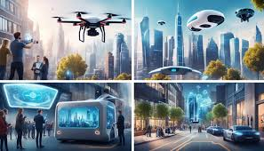
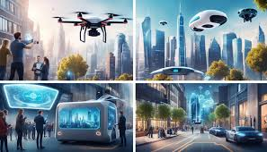

Welcome to our exploration of tech gadgets in 2024, where innovation meets everyday life! This year promises a host of exciting advancements that are set to redefine how we interact with technology. From cutting-edge wearables that monitor health in real-time to smart home devices that learn and adapt to our habits, the possibilities are endless. Augmented reality is making waves, enhancing our experiences in both work and play. With the rise of eco-friendly gadgets, sustainability is becoming a core focus in tech design. We will delve into the latest trends in connectivity, with 5G paving the way for faster, smarter devices. Robotics and AI are also set to become more integral in our daily routines. As we navigate through these innovations, we will highlight the most anticipated gadgets and their potential impact on our lives. Join us on this thrilling journey into the future of technology!
The future of tech gadgets is brimming with excitement as groundbreaking inventions are on the horizon. Wearable devices are set to become even more sophisticated, offering real-time health insights and personalized experiences. Smart home technology will evolve, allowing seamless control through voice and AI, creating more responsive living spaces. Imagine augmented reality glasses that not only enhance your view but also provide instant information about your surroundings. The rise of foldable and flexible screens will lead to innovative designs, merging functionality with style. Eco-friendly gadgets will take center stage, prioritizing sustainability without sacrificing performance. Enhanced connectivity through 5G will revolutionize how devices communicate, making interactions faster and more reliable. Robotics will play a significant role, with personal assistants becoming more autonomous and helpful. Overall, the future promises a thrilling blend of convenience, creativity, and environmental consciousness, making it an exhilarating time for tech enthusiasts. The potential to reshape our daily lives is truly inspiring!
.jpg) 
